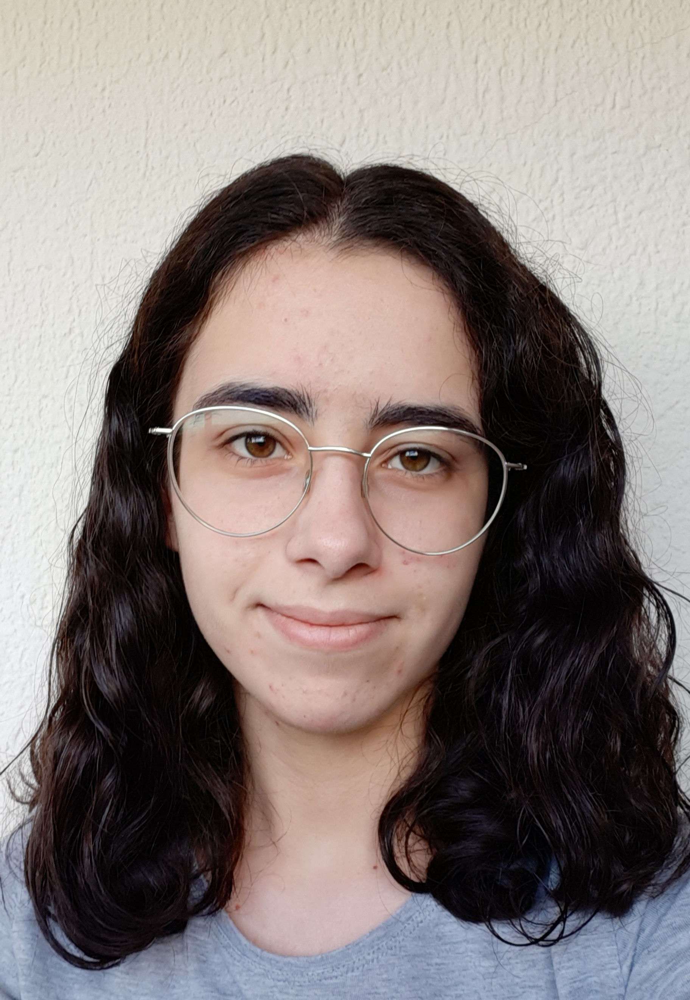

Catarina Pimenta

Summary
I am a hard working and looking forward to grow my programming skills.
Education
- Escola Secundária Camilo Castelo Branco (2014-2020)
- Universidade de Trás-os-Montes e Alto Douro, Degree in Computer Scienc (2020-2024)
Work experince
- Summmer internship at 4allSoftware (July-August 2024)
- Responsabilities:
- Software planning
- API development with .NET Core
Skills
- Team work
- C, C++ and C#
- Flutterflow
- Firebase
- SQL Server
- AspNET Core Web
Awards and Certifications